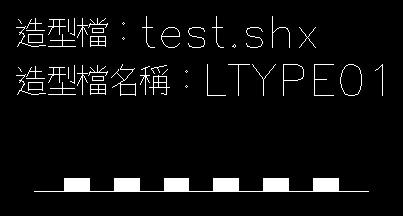
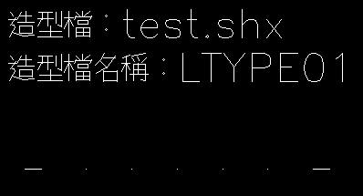
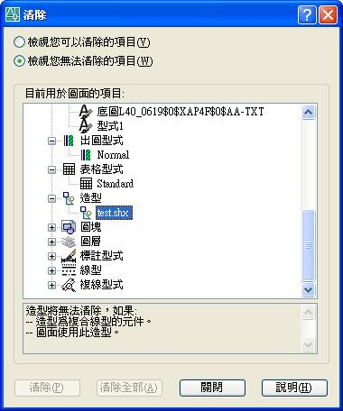
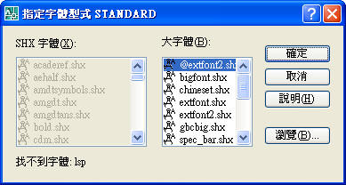
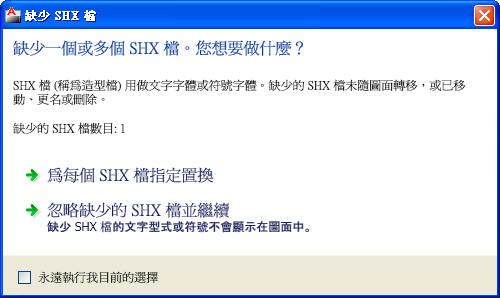

我收到一個 autocad 檔案每次打開它的時候都會要求選取一個 test.shx，然而在我的電腦裡面並沒有這個 test.shx 的檔案，然後我試著把其他的 shx 檔複製並改名給它，該檔案並不接受我提供的檔案，雖然當我在該對話方塊上按下取消按鈕依舊可以順利的開啟該 dwg 檔案，在開啟檔案後圖面上也沒有很顯然的哪裡有問題，但是這個問題終究依然在每次開啟該檔案時存在。
在看過 Autocad 說明與搜尋過知識＋之後大致上聊解可以用 mkshape 、compile、load 、shape 等指令製作編譯造型檔或字型檔並載入檔案中使用，所以後學的問題點如下，盼各位前輩指導
1. 在不找我的檔案來源要求提供該 test.shx 的狀況下，如何使該檔案在每次開啟時不再出現要求 test.shx ？
2. 如何得知該 DWG 檔案的哪些部分需要用到這個 test.shx ？
狀況模擬：當只有DWG檔案卻沒有 造型檔(SHX) 會有以下狀況，我分為二部份來說明，有問題請再提出來討論~
一、先說明一下造型檔的運用層面及觀念:
關於AutoCAD中文版翻譯 常常會造成許多誤解，因為副檔名為 shx，所以大多數人都認為是字型的問題，當你拿其他的字型檔是無法替代的，所以 編譯造型檔 一般並不是使用在字型上，通常用於 使用者自訂線型 的部份。
常見的含有造型檔圖面為測量圖說，因為測量圖中使用了大量的線型，而且都是自訂的造型，跟外部參考有點類似，也就是拿到dwg圖檔也需要拿到外部參考檔，這樣圖面才會呈現完整資訊。
當拿到含有造型檔的圖面，還必須擁有自訂的造型(shx)才能呈現完整線型(詳附圖)。若你沒有造型檔時按了取消後，對於圖面應該沒什麼影響，有可能只影響到 線型(*.lin) 而已。
a.有找到test.shx造型檔的線型

b.沒有找到test.shx造型檔的線型

ps:而他的用途也蠻類似圖塊的意思，早期可以當作圖塊來使用，必須先使用 LOAD指令載入造型檔(SHX)，再透過 SHAPE指令 來呼叫 造型檔中 的造型，不過現在都沒有人這樣使用。
二、以下回覆您的問題:
問1. 在不找我的檔案來源要求提供該 test.shx 的狀況下，如何使該檔案在每次開啟時不再出現要求 test.shx ？
答:這個 test.shx 編譯造型檔是使用者自定的造型檔，除非找到來源的建立者不然一定找不到的。不過還是可以把 AutoCAD 原始的 ltypeshp.shx 編譯造型檔，複製後更名為 test.shx 編譯造型檔。
ps:但是這樣就不能完整呈現完整線型。
預設 ltypeshp.shx 編譯造型檔位置:
C:\Program Files\AutoCAD "版本"\Support
問2. 如何得知該 DWG 檔案的哪些部分需要用到這個 test.shx ？
答:AutoCAD並無此功能來讓你查詢，不過，當你在開啟圖面的時候，當通知你找不到造型檔時表示這張圖有使用，也可以按照你使用PURGE的方式來檢視你不能刪除的部份，即可以發現造型檔名稱，而你要完全清除造型就必須先將圖面中的造型線型物件刪除，然後PURGE造型線型，最後在PURGE造型檔。

PS:如果造型線型資訊對我來說不重要，我通常都使用第一種方式來替代，如果我需要用到造型線型，我會請他把造型一起給我，就向外部參考檔一樣，必須由對方提供才行，可以請對方使用「電子傳送」ETRANSMIT 方式，傳送組件中的圖檔將自動包括所有相關的從屬檔案 (例如，外部參考、字體檔及造型檔)。
▼相關說明:[密技]AutoCAD 新增自訂線型(LIN)
https://www.autocad-tw.com/t10797-topic
2011.01.17補充:
另外一種情況：若出現以下畫面表示沒有字體檔(SHX)，若按取消的話圖面中就不會出現文字。
2008以下版本:

2011版本:
